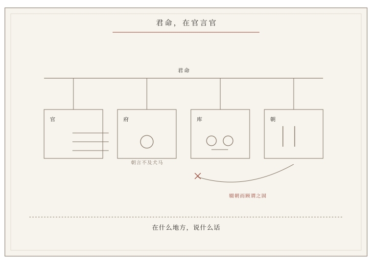

曲礼下 · 二·七十七 · 第 200 课
君命，大夫与士肄。在官言官，在府言府，在库言库，在朝言朝。朝言不及犬马。辍朝而顾，不有异事，必有异虑，故辍朝而顾，君子谓之固。在朝言礼，问礼，对以礼。注「肄，习也」「唯君命所在，就展习之也」。
说什么事：君有命，先习其事；在什么地方，只说那个地方的话。
落在哪一层：礼，兼及礼意。论言之所。
为何编在此位：上节论视之所，此节论言之所。目与口，同一分寸。
【经】君命，大夫與士肄。在官言官，在府言府，在庫言庫，在朝言朝。朝言不及犬馬。輟朝而顧，不有異事，必有異慮，故輟朝而顧，君子謂之固。在朝言禮，問禮，對以禮。
【注】肄，習也。君有命，大夫則與士展習其事，謂欲有所發為也。唯君命所在，就展習之也。官謂板圖文書之處，府謂寶藏貨賄之處也，庫謂車馬兵甲之處也，朝謂君臣謀政事之處也。朝言不及犬馬，非公議也。輟猶止也。心不正，志不在君。固，謂不達於禮也。
【疏】「君命」，谓君有教命，有所营为也；其大夫则与士先习学所为之事，备拟君之所使。「在官言官」者，此是君命所使之事，言犹议也；若君命之在官，则臣当展习言议在官之事。「在府言府」「在库言库」「在朝言朝」，亦随而习议之。知「官谓板图文书」者，与「府」相对，《周礼》内府之属皆主财货，故知官谓板图文书。「朝言不及犬马」，朝是谋于政教之处也，不宜私亵辩论以及犬马也。「辍朝而顾」者，辍，止也；异事，非常之事；异虑，非常之虑也。臣于朝矜庄俨恪，视不流目；若忽止朝而回顾，此若非见异事，则心有异虑也，此由不先习也。「君子谓之固」者，固，陋也；若身无异事、心无异虑，忽止朝而顾，君子谓此为固陋，不达礼意也。鲁哀公答孔子云「寡人固不固」是也。「在朝言礼，问礼，对以礼」者，朝事既重，谋政不轻，殷勤诫之，言及问对，则宜每事称礼也。
肄 习。展习其事。
官、府、库、朝 板图文书之处、宝藏货贿之处、车马兵甲之处、谋政事之处。
言 疏「言犹议也」。议其事，非闲话。
辍朝而顾 止朝而回头。
固 陋。不达礼意。
君有命，大夫与士先演习其事。命在官署，就议官署之事；在府库，就议府库之事；在兵库，就议兵库之事；在朝廷，就议朝廷之事。朝上之言不及犬马。止朝而回头，若非有异事，必有异虑，所以君子称之为固陋。在朝言礼，问必以礼，对必以礼。
此节讲两件事：一是「先习」，二是「所言不出其地」。前者治事，后者治口。「在朝言礼」一句收束，把话头交还给礼。
第一层 肄在命后 注「君有命，大夫则与士展习其事」。受命之后先演习，不是即刻施行。礼给执行留了一段准备。
第二层 四处四言 官、府、库、朝，各有其言。疏释「言犹议也」——不是闲聊，是议其事。在什么地方议什么事，是一种空间的纪律。
第三层 朝言不及犬马 注「非公议也」。朝是谋政教之处，犬马是私好。一句话把公议与私好隔开。
第四层 辍朝而顾 回头看这一动作，被读成两种可能：有异事，或有异虑。若两者皆无，就是「固」——不达礼意。礼连一个回头都要问个所以然。
与今日何干 会上突然回头找人，会被人看作有事不说。这条老规矩今天仍在运行。
| 左 | 右 |
|---|---|
| 君命，大夫与士肄 | 受命先习其事 |
| 在官言官 | 官谓板图文书之处 |
| 在府言府，在库言库 | 货贿之处、车马兵甲之处 |
| 在朝言朝 | 君臣谋政事之处 |
| 朝言不及犬马 | 非公议也 |
| 辍朝而顾 | 非异事则异虑，否则谓之固 |
画四个并排的小方框（示官、府、库、朝），框内各有一枚极简之形：第一框内三道横线（示文书），第二框内一圆（示货贿），第三框内两圆一小横（示车马），第四框内两道并立的竖线（示朝位）。四框之上画一条横线（示君命），自该线向下引出四道短竖，各通一框。四框之下另画一枚小弧，弧端回指左方（示「辍朝而顾」），弧旁画一枚打叉的小方点。不写文字、不画人。赭色只用在打叉的那枚小方点。
